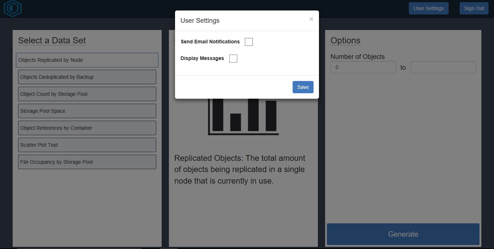

Demo Walkthrough
|
Figure 1-1 - Dashboard
|
The dashboard, as shown in figure 1-1, is the main page of the application. Here is a system administrator is able to accomplish several tasks First, on the left hand side of the image is a modal that is titled "Select a Data Set", here the user can choose a data set to visualize. Once a visual has been selected the center modal will give a brief description about the data set that will be visualized. Next, the third modal on the right hand side of the image will allow the system administrator to change how much of the data set will be visualized at a time. If no options are chosen on the third modal then the visual will generate with the complete data set. When a system administrator is ready to see the data they can click on the generate button at the bottom right corner of the dashboard.
|
Figure 1-2 - Generated Visual |
Figure 1-3 - Filtered Generated Visual |
The generated visual, as shown in figure 1-2, is page where the generated visual will be displayed. The visual itself will encompass the majority of the screen on the left hand side. If the user hovers over the visual something event will trigger depending on the type of visual being used. In this case more in depth information regarding the section of the pie graph will be displayed. Now in the event that there are too many objects in the visual the user can copy the name of the object in the visual and paste it in the upper right modal. In this modal the user can filter out objects. Once filtered out newly filtered out visual will appear as shown in figure 1-3. As you can see the "Clever-2" object was filtered out of the visual and it readjusted itself to properly show the remaining information. If a user would like that object back into the visual then they can use the new option in the filter modal; this new option will be a drop down menu that houses all objects that have been filtered out. Once selected they can choose to re-visualize the object, and the original visual will reappear. Now in the bottom right modal of both figure 1-2 and 1-3 we have the messages modal. Here a user can look to find out any immediate errors or system alerts that the user may want to attend to. This will normally be related to the current visual being analyzed but will also include other important alerts. Lastly, when a user wants to choose a new data set to visualize they can go to the top left corner of the screen and click on the button called "Select Another Visual".
|

Figure 1-4 - User Settings
|
The user settings, as shown in figure 1-4, gives a user a few different options; specifically options regarding the delivery and visibility of notifications. First, if a user would like to receive the more important notifications while they are away from the dashboard then they can choose to have that option checked. This will send periodical notifications to the users preferred email address. Next, a user can choose whether or not they want the notifications to be displayed when they visual a data set.
NOTE: You can access the web application here. (If the web application is still online)